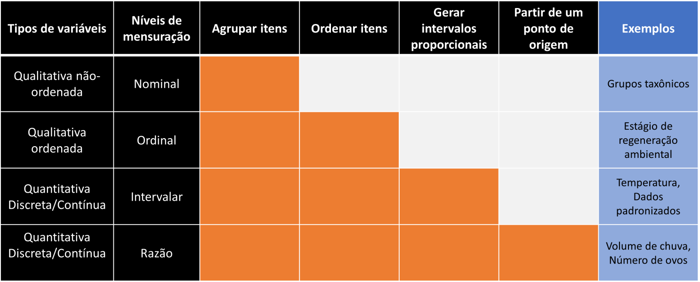

Capítulo 1 Estrutura e tipo de dados
A estatística descritiva se utiliza de métodos para resumir e evidenciar as informações relevantes de um conjunto de dados. Em grande parte, a apresentação destas informações passa pela construção de gráficos e tabelas apropriados a diferentes tipos de dados, além do cálculo de descritores que resumem algumas características das variáveis envolvidas (ex. média aritmética, desvio padrão, frequência relativa, padrões de correlação). Iremos discutir cada um destes tópicos nesta seção e veremos que de modo geral, a forma de apresentação depende da natureza dos dados envolvidos e da relação que estabelecemos entre eles.
Neste capítulo iremos tratar da estrutura de um conjunto de dados e dos tipos de variáveis mais comuns. Considere a tabela abaixo, construída a partir do livro Biocenoses em Reservatórios: padrões espaciais e temporais (Rodrigues et al. 2005) que apresenta informações sobre 31 reservatórios do estado do Paraná.
| Reservatorio | Bacia | Fechamento | Area | Trofia | pH | Condutividade | Alcalinidade | P.total | Riqueza | CPUE |
|---|---|---|---|---|---|---|---|---|---|---|
| Cavernoso | Iguacu | 1965 | 2.90 | Oligotrófico | 7.4 | 33.1 | 139.80 | 7.8 | 18 | 9.22 |
| Curucaca | Iguacu | 1982 | 2.00 | Oligotrófico | 7.0 | 32.4 | 125.70 | 4.7 | 16 | 28.73 |
| Foz do Areia | Iguacu | 1980 | 139.00 | Oligotrófico | 7.3 | 35.5 | 97.00 | 14.3 | 19 | 11.59 |
| Irai | Iguacu | 2000 | 15.00 | Eutrófico | 6.9 | 50.2 | 3.30 | 53.4 | 12 | 30.76 |
| JMF | Iguacu | 1970 | 0.45 | Mesotrófico | 7.3 | 40.2 | 3.70 | 41.2 | 18 | 5.95 |
| Jordao | Iguacu | 1996 | 3.40 | Oligotrófico | 7.1 | 23.7 | 152.70 | 3.3 | 17 | 7.75 |
| Passauna | Iguacu | 1978 | 14.00 | Oligotrófico | 8.8 | 125.6 | 526.00 | 15.2 | 11 | 7.51 |
| Piraquara | Iguacu | 1979 | 3.30 | Oligotrófico | 7.1 | 22.8 | 50.67 | 4.5 | 8 | 4.01 |
| Salto Caxias | Iguacu | 1998 | 124.00 | Oligotrófico | 7.3 | 39.6 | 106.00 | 12.1 | 21 | 20.83 |
| Salto do Vau | Iguacu | 1959 | 2.90 | Oligotrófico | 6.5 | 23.2 | 279.00 | 11.0 | 8 | 2.43 |
| Salto Osorio | Iguacu | 1975 | 51.00 | Oligotrófico | 8.6 | 38.9 | 233.30 | 3.4 | 24 | 12.55 |
| Salto Santiago | Iguacu | 1979 | 208.00 | Oligotrófico | 9.2 | 39.5 | 117.60 | 13.1 | 21 | 11.73 |
| Segredo | Iguacu | 1992 | 82.50 | Oligotrófico | 7.0 | 34.5 | 165.20 | 6.4 | 22 | 13.72 |
| Mourao | Ivai | 1964 | 11.30 | Oligotrófico | 8.1 | 23.3 | 56.55 | 7.1 | 15 | 16.50 |
| Patos | Ivai | NA | 1.30 | Mesotrófico | 6.9 | 46.0 | 180.10 | 39.2 | 10 | 4.71 |
| Guaricana | Litoranea | 1957 | 7.00 | Oligotrófico | 7.4 | 27.9 | 83.72 | 12.4 | 12 | 7.95 |
| Parigot Souza | Litoranea | 1970 | 12.00 | Oligotrófico | 7.7 | 63.6 | 259.20 | 16.9 | 12 | 13.12 |
| Salto do Meio | Litoranea | NA | 0.10 | Oligotrófico | 6.9 | 37.4 | 147.10 | 17.1 | 11 | 16.10 |
| Vossoroca | Litoranea | 1949 | 5.10 | Mesotrófico | 7.3 | 39.8 | 156.00 | 21.9 | 14 | 11.74 |
| Canoas I | Paranapanema | 1999 | 30.85 | Oligotrófico | 7.4 | 63.3 | 234.90 | 9.9 | 35 | 17.95 |
| Canoas II | Paranapanema | 1992 | 22.50 | Oligotrófico | 7.8 | 61.2 | NA | 9.0 | 40 | 13.86 |
| Capivara | Paranapanema | 1975 | 419.30 | Oligotrófico | 7.5 | 58.6 | 196.00 | 5.5 | 34 | 13.04 |
| Chavantes | Paranapanema | 1970 | 400.00 | Oligotrófico | 7.6 | 57.8 | 211.80 | 7.8 | 23 | 7.35 |
| Rosana | Paranapanema | 1986 | 220.00 | NA | 7.7 | 58.2 | 202.40 | NA | 30 | 20.92 |
| Salto Grande | Paranapanema | 1958 | 12.00 | Oligotrófico | 7.1 | 62.3 | 230.10 | 10.3 | 24 | 13.67 |
| Taquarucu | Paranapanema | 1989 | 80.10 | Oligotrófico | 7.9 | 57.0 | 191.80 | 4.5 | 33 | 21.82 |
| Melissa | Piriqui | 1962 | 0.10 | Eutrófico | 6.8 | 34.0 | 68.37 | 66.9 | 12 | 6.29 |
| Santa Maria | Piriqui | NA | 0.07 | Oligotrófico | 6.8 | 41.7 | 480.10 | 14.9 | 7 | 9.40 |
| Alagados | Tibagi | 1909 | 7.20 | Oligotrófico | 7.6 | 41.7 | 172.20 | 19.9 | 7 | 5.60 |
| Apucaraninha | Tibagi | 1958 | NA | NA | NA | NA | NA | NA | 10 | 2.05 |
| Harmonia | Tibagi | NA | NA | Oligotrófico | 8.3 | 31.0 | 113.30 | 8.6 | 7 | 24.88 |
A tabela é formada por 31 linhas referentes a cada reservatório e 11 colunas em que constam informações sobre cada reservatório, sendo elas:
Reservatorio: nome do reservatório;
Bacia: bacia hidrográfica (Iguacu, Ivai, Litoranea, Paranapanema, Piriqui, Tibagi);
Fechamento: ano de formação do reservatório;
Area: área em \(km^2\);
Trofia: grau de trofia (Eutrófico, Mesotrófico, Oligotrófico);
pH: pH;
Condutividade: condutividade;
Alcalinidade: alcalinidade;
P.total: fósforo total;
Riqueza: número de espécies de peixes encontrada;
CPUE: captura (kg) por unidade de esforço;
1.1 Unidades amostrais e descritores
Esta tabela está organizada em um formato muito específico em que cada linha representa uma unidade amostral (UA) e cada coluna representa uma variável (VA) que descreve determinada característica desta observação. Ao longo desta apostila veremos diversos conjuntos de dados, todos eles organizados neste formato.
| ID | UA 1 | UA 2 | UA 3 | UA 4 | UA 5 | UA 6 | UA 7 |
|---|---|---|---|---|---|---|---|
| UA 1 | |||||||
| UA 2 | |||||||
| UA 3 | |||||||
| UA 4 | |||||||
| UA 5 | |||||||
| UA 6 | |||||||
| UA 7 | |||||||
| UA 8 | |||||||
| UA 9 | |||||||
| UA 10 |
Em nosso exemplo, cada unidade amostral é um reservatório que é descrito pelas variáveis dispostas nas colunas. O reservatório de Cavernoso por exemplo faz parte da bacia do rio Iguacu, foi formado no ano de 1965, tem área de 2.9 \(km^2\), pH igual a 7.4 e assim por diante.
Valores faltantes: algumas células da tabela estão preenchidas por NA. Isto significa que a informação naquela célula não foi mensurada e que temos um dado faltante. Você deve ter muito cuidado ao lidar com este tipo de situação. Se uma linha contém muitas células sem informação, é prudente excluir esta observação das análises. Se por outro lado, uma coluna apresenta muitos valores faltantes, talvez seja prudente excluir a variável das análises. Se você não deseja ou não pode excluir a linha ou a coluna existem métodos de preenchimento de dados faltantes. No entanto, ao optar por algum destes métodos, você deve ter ter claro quais serão os efeitos de inserir uma informação à tabela de dados que efetivamente não foi mensurada.
1.2 Tipos de dados
Uma tabela de dados pode ser composta por variáveis quantitativas ou qualitativas.
1.2.1 Variáveis qualitativas
São variáveis não-numéricas como categorias ou rótulos. Dentre as variáveis qualitativas temos aquelas do tipo categóricas não-ordenadas e do tipo categóricas ordenadas.
Variável categórica não-ordenada: Em nossa tabela, a variável Bacia classifica um reservatório como pertencente a uma determinada bacia hidrográfica. Os níveis da variável Bacia são: Iguacu, Ivai, Litoranea, Paranapanema, Piriqui, Tibagi. A variável é do tipo categórica não-ordenada pois estes níveis não possuem qualquer relação de ordenação natural entre si.
Variável categórica ordenada: a variável Trofia ordena os reserrvatórios como função da quantidade de nutrientes em Oligotrófico < Mesotrófico < Eutrófico. Ainda que os níveis possam ser ordenados, não é possível atribuir diferenças numéricas entre eles, fazendo desta uma variável qualotativa.
1.2.2 Variáveis quantitativas
São variáveis numéricas que também podem ser sub-dividicas em dois grupos: discretas e contínuas.
Variáveis quantitativas discretas: envolvem quantias enumeráveis como a contagem de barcos que saem para pescar em um determinado dia, o número de peixes de um cardume. Em nosso exemplo, a variável Num_especies é quantitativa discreta pois expressa o número de espécies de peixes encontradas em cada reservatório. Este é um número inteiro que pode assumir valor mínimo igual a 0 (nenhuma espécie) e em teoria, não tem limite superior (ainda que neste exemplo, o número máximo encontrados seja de - espécies).
Variáveis quantitativas contínuas: envolvem quantias não-enumeráveis como a vazão em \(m^3/seg\) que verte de uma cachoeira, o volume de chuva em um determinado dia, altura da maré ou a velocidade do vento. O limite de precisão que utilizamos para representá-las depende basicamente da capacidade de mensuração dos aparelhos disponíveis. Em nosso exemplo, temos diversas variáveis deste tipo como pH, Condutividade, Fosforo_total.
Sempre é possível transformar variáveis quantitativas em qualitativas. Se temos a variável comprimento de peixes desembarcados dada em centímetros (variável quantitativa), é possível expressa-la de forma cetagórica em peixes grandes e pequenos (variável qualitativa). Por outro lado se tivermos somente a informação de que um peixe é grande ou pequeno, não podemos recuperar as quantias numéricas originais.
1.3 Níveis de mensuração
Uma outra forma de organizar variáveis pode ser em função dos níveis de mensuração nominal, ordinal, intervalar e razão.
Nível nominal: é característico de variáveis que possuem níveis não ordenaveis. Ex. cor, grupo taxonômico, nomes de cidades, etc.
Nível ordinal: é aquele em que os níveis podem ser ordenados, embora não seja possível quantificar as diferenças entre dois níveis. Ex. i - Ordem de chegada de maratonistas em uma competição (\(1^o\), \(2^o\), \(3^o\),…). ii - Condição de saneamento das cidades (ótimo, bom, ruim, péssimo). iii - Condição de saneamento das praias da baixada santista (próprio, imprórpio). No nível ordinal podemos ordenar os elementos porém não podemos quantificar as diferenças entre eles.
Nível intervalar: é aquele em que além ser possível ordenar, é possível quantificar as diferenças entre duas observações. No entanto, não há um ponto inicial natural, ou seja, um ponto zero que indique ausência da quantia. Ex. i – Temperatura: \(0^oC\) não indica ausência de temperatura, assim como \(10^oC\) não é duas vezes mais quente que \(5^oC\). Essas características são somente uma convenção relacionada à escala de mensuração da temperatura. ii - Ano do calendário: o ano zero é uma convenção do calendário, não significa ausência de tempo.
Nível de razão: é como o intervalar, porém existe um ponto zero natural. Peso igual a 0 kg indica ausência de peso e dez quilogramas é duas vezes mais pesado que 5 kg. O mesmo vale para comprimento, distância, velocidade, número de ovos.
A depender do nível de mensuração, algumas operações matemáticas podem ou não fazer sentido. Por exemplo, se uma espécie tem \(N_A = 100\) indivíduos na região A e \(N_B = 200\) na região B, a segunda região é duas vezes mais populosa pois \(\frac{N_B}{N_A} = 2\). Por outro lado, se a temperatura na região A é de \(T_A = 10^oC\) enquanto na B é de \(T_B = 20^oC\) não faz sentido fazer \(\frac{T_B}{T_A} = 2\) e dizer que B seja duas vezes mais quente que A. Ainda que matematicamente a operação seja possível nos dois exemplos, no último sua interpretação física não tem sentido.
Tipos de dados vs níveis de mensuração: existe uma relação entre tipo de dados e nível de mensuração. Os níveis nominal e ordinal de mensuração se referem a variáveis qualitativas não-ordenadas e qualitativas ordenadas respectivamente. Já os níveis intervalar e razão se referem a variáveis quantitativos, podendo ser discretas ou contínuas.
